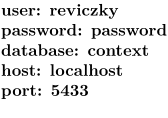
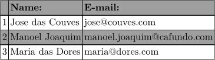

Contents
PostgreSQL
CREATE TABLE contacts ( nr integer, name text, email text, year integer, PRIMARY KEY (nr, name) ); INSERT INTO contacts (nr, name, email, year) VALUES ( 1, 'Jose das Couves', 'jose@couves.com' , 2011), ( 2, 'Manoel Joaquim' , 'manoel.joaquim@cafundo.com', 2011), ( 3, 'Maria das Dores', 'maria@dores.com' , 2011);
CLD
\startluacode require "luasql.postgres" local user = "reviczky" -- SQL username local password = "password" -- SQL password local database = "context" -- database name local host = "localhost" -- localhost by default local port = "5433" -- 5432 by default local function sqlinfo() -- returns SQL connection data return "user: " .. user .. "\string\\crlf " .. "password: " .. password .. "\string\\crlf " .. "database: " .. database .. "\string\\crlf " .. "host: " .. host .. "\string\\crlf " .. "port: " .. port .. "\string\\crlf\string\\par" end local function sql(sqlquery,sqlvar) local env = assert(luasql.postgres()) local con = assert(env:connect(database,user,password,host,port)) local cur = assert(con:execute(sqlquery)) local result = cur:fetch({},"a") local colnames = cur:getcolnames() local nextmatch,sqlarr = 0,{ } while result do sqlarr[nextmatch] = result[sqlvar] result = cur:fetch(result,"a") nextmatch = nextmatch + 1 end cur:close() con:close() env:close() return sqlarr end context.starttext() context.bf() context(sqlinfo()) context.tf() -- SQL info local selectquery = "SELECT * FROM contacts WHERE year=2011" -- SQL QUERY local var1 = sql(selectquery,"name") local var2 = sql(selectquery,"email") context.setupTABLE({"r"},{"1"},{style="bold"}) context.setupTABLE({"r"},{"odd"},{background="color",backgroundcolor="middlegray"}) context.bTABLE() context.bTR() context.bTD() context.eTD() context.bTD() context("Name:") context.eTD() context.bTD() context("E-mail:") context.eTD() context.eTR() for currow=0,#var1 do context.bTR() context.bTD() context(currow+1) context.eTD() context.bTD() context(var1[currow]) context.eTD() context.bTD() context(var2[currow]) context.eTD() context.eTR() end context.eTABLE() context.stoptext() \stopluacode
Sample output
- 
- 
LuaLaTeX
robitex.wordpress.com (italian)